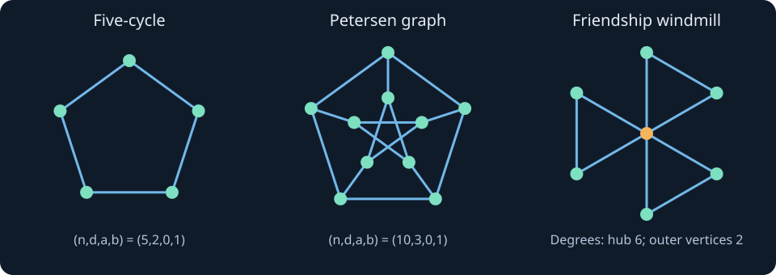

10. Regularity, two-distance counts and the friendship theorem
Knowing one vertex's degree is local information. Requiring every vertex to have that degree turns the all-ones vector into an exact eigenvector. Requiring uniform common-neighbor counts turns the entire squared adjacency matrix into a quadratic expression in the adjacency matrix and the all-ones matrix. These restrictions let us recover spectra, rule out proposed parameter sets, and prove a surprising global statement: if every pair of people has exactly one common friend, somebody is everybody's friend.
10.1 Regularity makes the top eigenspace explicit
A graph is $d$-regular if every vertex has degree $d$. Its adjacency matrix $A$ then satisfies $A\mathbf1=d\mathbf1$. Conversely, if $A\mathbf1=c\mathbf1$, each row sum is $c$, so every degree is $c$ and the graph is regular. In an unweighted graph that scalar is necessarily a nonnegative integer. Regularity does not mean that all vertex neighborhoods are isomorphic or that the graph is connected.
The largest eigenvalue is $d$. One proof combines the eigenvector just found with the bound $|\lambda|\le d$: for an eigenvector $x$, choose an entry of maximum absolute magnitude. Its eigen-equation gives $|\lambda||x_u|\le\sum_{v\sim u}|x_v|\le d|x_u|$. A nonzero eigenvector has a positive maximum magnitude, so division is legitimate.
We can also identify the full eigenspace at $d$ without invoking Perron–Frobenius. The edge-energy identity is
$$x^T(dI-A)x=\sum_{\{u,v\}\in E}(x_u-x_v)^2.$$Thus $Ax=dx$ forces equality of entries across every edge and hence constancy on each connected component. Conversely, a vector that is constant on each component satisfies $Ax=dx$, because each component is itself $d$-regular. Component indicator vectors form a basis. Therefore the multiplicity of $d$ is exactly the number of components. In a connected regular graph the top eigenvector is constant and the top eigenvalue is simple. For $d=0$, every vertex is an isolated component and the zero matrix has zero eigenvalue of multiplicity $n$; the same statement still holds.
On a $d$-regular graph with $d>0$, the normalized adjacency from chapter 9 is $A/d$, and its stationary distribution on a connected support is uniform. Regularity is exactly what removes the degree bias in that setting. It does not remove negative eigenvalues or the periodicity of bipartite walks.
10.2 A sharper independence bound for regular graphs
Let $d>0$ and let $s=\lambda_n(A)<0$ be the least eigenvalue. Its negativity follows because the trace is zero while the positive eigenvalue $d$ is present. For a nonempty independent set $S$ of size $k$, we have $k<n$. Let $z=\mathbf1_S$ and center it by $y=z-(k/n)\mathbf1$. Then $\mathbf1^Ty=0$, $z^TAz=0$, and direct expansion gives
$$y^Ty=k-\frac{k^2}{n},\qquad y^TAy=-\frac{dk^2}{n}.$$The first expression is positive. The minimum Rayleigh quotient therefore yields $s\le-dk/(n-k)$. Multiplying by $n-k>0$ and collecting terms gives the regular Hoffman bound
$$\boxed{\alpha(G)\le\frac{-ns}{d-s}=\frac{n}{1-d/s}.}$$When the bound is not integral, take its floor. The empty independent set is trivial, and the entirely edgeless graph must instead use $\alpha=n$; substituting $d=s=0$ into the displayed ratio would be undefined. Connectivity is unnecessary for this proof provided the whole graph has the same positive degree.
Equality has structural consequences. In a symmetric matrix, equality in the least Rayleigh quotient means that $y$ belongs to the least eigenspace: expand in an orthonormal eigenbasis, where a weighted average reaches its minimum only on minimum-eigenvalue coordinates. Thus equality implies $Ay=sy$. For a vertex outside $S$, this equation becomes
$$|N(v)\cap S|-\frac{dk}{n}=-\frac{sk}{n},\qquad |N(v)\cap S|=(d-s)\frac{k}{n}=-s.$$Every outside vertex has exactly $-s$ neighbors in $S$. In particular, equality requires $-s$ to be an integer. The two cells $S$ and its complement form an equitable partition: internal neighbor counts are $0$ and $d+s$, and cross counts are $d$ and $-s$. Conversely, an independent set of the ratio-bound size realizes equality by the same calculation. The condition is stronger than merely finding a numerically large set.
For $K_{q,q}$, $n=2q$, $d=q$ and $s=-q$, so the bound is $q$ and either part attains it. For the Petersen graph we will obtain $(n,d,s)=(10,3,-2)$, giving $\alpha\le4$. A four-vertex witness will close that bound exactly.
10.3 Two-distance counts define strong regularity
A nontrivial strongly regular graph with parameters $(n,d,a,b)$ is a $d$-regular graph on $n$ vertices, with $0<d<n-1$, in which every adjacent pair has exactly $a$ common neighbors and every distinct nonadjacent pair has exactly $b$ common neighbors. These letters refer to neighbor counts, not the independence number. Connectivity is not part of this definition; when it is needed, it will be stated.
The cycle $C_4$ has parameters $(4,2,0,2)$; opposite vertices have two common neighbors. The cycle $C_5$ has $(5,2,0,1)$. The cycle $C_6$ is regular but not strongly regular: vertices at distance two have one common neighbor, while opposite vertices have none. Thus ordinary degree regularity is only a one-vertex condition; strong regularity imposes uniformity on two-vertex data.
Construct the Petersen graph using the ten two-element subsets of a five-element set. Two vertices are adjacent exactly when the corresponding subsets are disjoint. A vertex has $\binom32=3$ neighbors. For disjoint two-subsets, their union leaves only one ground-set element, so no two-subset can avoid both: adjacent vertices have no common neighbor. Distinct intersecting two-subsets have a three-element union; its two-element complement is the unique common neighbor. The parameters are therefore $(10,3,0,1)$, proved without relying on a particular drawing.

A useful parameter identity comes from one fixed vertex $u$. Count edges between its $d$ neighbors and its $n-d-1$ nonneighbors. Each neighbor has $d-a-1$ neighbors in the latter set: remove $u$ and its $a$ common neighbors with $u$. Each nonneighbor has $b$ neighbors in the former set. Thus
$$d(d-a-1)=(n-d-1)b.$$This is a necessary count, not an existence theorem. The handshake identity also requires $nd$ even, and the triangle count requires $nda/6$ to be an integer. A candidate can pass these elementary tests and still fail a spectral multiplicity test.
10.4 A common-neighbor identity collapses the spectrum
Let $J=\mathbf1\mathbf1^T$. The entry $(A^2)_{uv}$ counts length-two walks, equivalently common neighbors for $u\ne v$; its diagonal is the degree $d$. Inspecting diagonal, adjacent and nonadjacent entries separately gives
$$A^2=dI+aA+b(J-I-A)=(d-b)I+(a-b)A+bJ.$$Assume now that the strongly regular graph is connected. Its eigenspace at $d$ is spanned by $\mathbf1$. Every other adjacency eigenvector is orthogonal to $\mathbf1$, so $Jx=0$. Applying the identity to such a nonzero eigenvector gives
$$\theta^2-(a-b)\theta-(d-b)=0,\qquad r,s=\frac{a-b\pm\sqrt{\Delta}}2,\quad \Delta=(a-b)^2+4(d-b).$$There are at most three distinct eigenvalues: $d$ and the two quadratic roots. There are also at least three. A connected noncomplete graph has diameter at least two; chapter 5's diameter bound requires at least three distinct eigenvalues. Consequently both roots occur and are distinct. This avoids assuming in advance that a quadratic root must have positive multiplicity merely because it is an algebraic possibility. For connected nontrivial strongly regular graphs, $r\ge0$ and $s<0$; $r$ can be zero, as in $C_4$.
The disconnected boundary is instructive. If $b=0$, any length-two path whose endpoints are nonadjacent would contradict that count. Hence every component is complete: otherwise a shortest path between nonadjacent vertices supplies such a length-two pair. Regularity forces all components to be copies of $K_{d+1}$. Conversely, a disjoint union of at least two equal cliques has these parameters with $a=d-1,b=0$, but only two distinct eigenvalues $d,-1$. Thus “strongly regular if and only if three distinct eigenvalues” needs the connected nontrivial qualification. If a strongly regular graph is disconnected, cross-component pairs force $b=0$, so this describes the full disconnected case.
10.5 Multiplicity turns a real-root formula into an arithmetic test
In the connected case, let $f,g$ be the multiplicities of $r,s$. Counting eigenvalues and taking the trace give
$$f+g=n-1,\qquad d+fr+gs=0,\qquad f=\frac{-d-(n-1)s}{r-s},\quad g=\frac{d+(n-1)r}{r-s}.$$These quantities must be positive integers. For the Petersen graph, $r=1,s=-2$, so $f=5,g=4$ and the characteristic polynomial is $(z-3)(z-1)^5(z+2)^4$. The four two-subsets containing one fixed ground-set element form an independent set: any two intersect, so they are nonadjacent. Together with the Hoffman bound, this proves $\alpha=4$. Each outside two-subset is disjoint from exactly two of the four witness vertices, agreeing with the equality condition.
For $C_5$, $r=(\sqrt5-1)/2$ and $s=-(\sqrt5+1)/2$ each have multiplicity two. Irrational eigenvalues do not imply nonintegral multiplicities: the irrational terms cancel in the trace equations. The independence ratio is $\sqrt5$, whose floor is two, and two nonadjacent vertices attain that integral bound.
As an impossible candidate, take $(n,d,a,b)=(10,6,2,6)$. The two-distance count reads $6(6-2-1)=3\cdot6=18$; $nd=60$ is even and $nda/6=20$ is an integer. But the nonconstant roots are $0,-4$. The trace equations require $f=15/2,g=3/2$, impossible for multiplicities. This rules out a graph; it does not certify existence of every other parameter set whose multiplicities happen to be integral.
Complementation gives another useful consistency check. The complement is $(n-d-1)$-regular, and direct counting outside the two chosen vertices gives parameters
$$(n,\ n-d-1,\ n-2-2d+b,\ n-2d+a).$$For an originally nonadjacent pair, exclude both endpoints and their $2d-b$ original neighbors to get the complement-adjacent common-neighbor count. For an originally adjacent pair, their neighborhoods outside the endpoints have union size $2(d-1)-a$, giving the other count. The complement need not be connected. On $\mathbf1^\perp$, its adjacency $J-I-A$ changes an eigenvalue $\theta$ to $-1-\theta$, while the constant eigenvalue becomes $n-d-1$. This relationship requires regularity to keep the same constant subspace separate.
10.6 Three distinct eigenvalues characterize the connected regular case
Suppose a connected $d$-regular graph has exactly three distinct eigenvalues $d,r,s$. Define $p(z)=(z-r)(z-s)$. On $\mathbf1^\perp$, $p(A)$ vanishes, while on constants it acts as $(d-r)(d-s)$. The orthogonal projector onto constants is $J/n$. Therefore
$$A^2-(r+s)A+rsI=cJ,\qquad c=\frac{(d-r)(d-s)}n>0.$$For a nonadjacent pair the off-diagonal identity gives $(A^2)_{uv}=c$; for an adjacent pair it gives $(A^2)_{uv}=c+r+s$. These are uniform common-neighbor counts. Because a graph with exactly three distinct eigenvalues cannot be complete or edgeless, both types of pair occur. Their counts are nonnegative integers, and $c>0$ ensures the nonadjacent count is positive. On the diagonal we also obtain $d+rs=c$. Thus the graph is strongly regular with $b=c$ and $a=c+r+s$.
Every hypothesis matters. The disjoint union of two copies of $C_5$ is regular and has exactly the same three distinct eigenvalues as one copy. Yet a nonadjacent pair inside one cycle has one common neighbor, whereas a pair in different cycles has none. Connectivity cannot be dropped. A star $K_{1,q}$ for $q>1$ has exactly three distinct eigenvalues $\sqrt q,0,-\sqrt q$ but is not regular. A short eigenvalue list alone does not imply the common-neighbor identity.
10.7 Unique common neighbors force regularity unless there is a hub
Friendship theorem. If every two distinct vertices of a finite nonempty simple graph have exactly one common neighbor, some vertex is adjacent to all others. The one-vertex graph satisfies the premise vacuously and its sole vertex has degree $n-1=0$. A two-vertex graph cannot satisfy the premise. In every remaining case the graph is connected, since any pair has a length-two path.
Let $D$ now denote the diagonal matrix of possibly unequal degrees. The premise gives the exact matrix identity
$$A^2=D+J-I.$$The diagonal counts degrees; every off-diagonal entry is one. Since $A$ commutes with its square, $A(D+J)=(D+J)A$. At entry $(u,v)$ the left side is $a_{uv}d_v+d_u$, and the right side is $d_ua_{uv}+d_v$. Subtraction gives
$$(1-a_{uv})(d_u-d_v)=0.$$Hence any two nonadjacent vertices have equal degree. This matrix calculation supplies a short complete proof of the degree-comparison step that the lecture illustrates with neighbor correspondences; it does not assume the graph is regular to obtain it.
Suppose for contradiction that no vertex is universal. Choose two nonadjacent vertices $u,v$, with their unique common neighbor $w$. They have the same degree, say $k$. Every vertex $x$ other than $u,v,w$ fails to be adjacent to at least one of $u,v$; otherwise it would be a second common neighbor. Consequently $d_x=k$ by the nonadjacent-degree result. The vertices $u,v$ themselves already have degree $k$. Finally, since $w$ is not universal, it has a nonneighbor $z\ne w$. That vertex already has degree $k$, so $d_w=d_z=k$. The entire graph is regular. Each degree is at least two, because for any adjacent pair the required common neighbor forms a triangle. Under the no-hub assumption it is a connected nontrivial strongly regular graph with parameters $(n,k,1,1)$.
10.8 Integer multiplicities eliminate the no-hub alternative
For parameters $(n,k,1,1)$, the nonconstant eigenvalues are $r=\sqrt{k-1}$ and $s=-\sqrt{k-1}$. Their multiplicities $f,g$ satisfy
$$k+(f-g)\sqrt{k-1}=0,\qquad g-f=\frac{k}{\sqrt{k-1}}.$$The left side is an integer and $k\ge2$, so it is positive. Therefore $\sqrt{k-1}$ is rational. A rational square root of an integer is an integer: if $\sqrt{k-1}=p/q$ in lowest positive terms, then $p^2=(k-1)q^2$, and any prime dividing $q$ must divide $p$, a contradiction unless $q=1$. Write this positive integer as $h$. Then $k=h^2+1$, while $g-f=k/h$ being integral implies $h\mid k$. Thus $h\mid(h^2+1)$ and $h\mid h^2$, forcing $h\mid1$. We obtain $h=1$ and $k=2$.
There is one final size constraint. Apply $A^2=(k-1)I+J$ to $\mathbf1$. It gives $k^2=k-1+n$, hence $n=k^2-k+1=3$. A connected 2-regular graph on three vertices is $K_3$, where every vertex is universal. This contradicts the no-hub assumption and proves the theorem. The square root and the rational-to-integer step are essential; dropping the root in a transcript shorthand would leave an invalid divisibility argument.
The theorem has a complete structural consequence. Remove a universal vertex $w$. For any other vertex $u$, the common neighbors of $u,w$ are exactly the neighbors of $u$ in the remaining graph. There must be exactly one. Thus the remaining graph is 1-regular, a disjoint union of pairs. Adding the hub back creates triangles sharing just that vertex, with no other edges. Conversely, every such windmill has exactly one common neighbor for each pair: paired outer vertices share the hub, different pairs also share the hub, and a hub–outer pair shares that outer vertex's partner. Therefore all nontrivial friendship graphs have $n=2q+1$ vertices and consist of $q$ triangles joined at a hub. They are regular only when $q=1$.
The 1966 primary paper of Erdős, Rényi and Sós, Theorem 6 on printed pp. 234–235, states the equivalent classification using a length-two path between every pair and the absence of a four-cycle. Two distinct common neighbors would create a four-cycle, establishing the equivalence. Those pages were actually read. The paper's final argument uses finite-plane geometry; the spectral and integer-multiplicity proof above is a self-contained reconstruction of the lecture route, not a claim to reproduce that historical proof verbatim.
10.9 Execute local counts, exact spectra and equality certificates
The SymPy program constructs graphs from explicit rules, checks their common-neighbor identities, exhaustively finds independent sets only on the small displayed examples, and verifies the Petersen equality eigenvector exactly. It also rejects a feasible-looking parameter tuple by rational multiplicities and checks the windmill matrix identity. Exhaustive subset enumeration here is exponential and is used as a finite check, not an efficient general algorithm.
from itertools import combinations
import sympy as sp
def adjacency(n, edges):
A = sp.zeros(n)
for u, v in edges:
A[u, v] = A[v, u] = 1
return A
def srg_parameters(A):
n = A.rows
degrees = list(A*sp.ones(n, 1))
if len(set(degrees)) != 1 or not 0 < degrees[0] < n-1:
return None
A2 = A*A
adjacent = {A2[i, j] for i in range(n) for j in range(i+1, n) if A[i, j]}
nonadjacent = {A2[i, j] for i in range(n) for j in range(i+1, n) if not A[i, j]}
if len(adjacent) != 1 or len(nonadjacent) != 1:
return None
return n, degrees[0], adjacent.pop(), nonadjacent.pop()
def independence(A):
best = ()
for k in range(A.rows+1):
for S in combinations(range(A.rows), k):
if all(A[i, j] == 0 for i, j in combinations(S, 2)):
best = S
return best
z = sp.Symbol('z')
C5 = adjacency(5, [(i, (i+1)%5) for i in range(5)])
C6 = adjacency(6, [(i, (i+1)%6) for i in range(6)])
pairs = list(combinations(range(5), 2))
P = adjacency(10, [(i, j) for i, j in combinations(range(10), 2)
if set(pairs[i]).isdisjoint(pairs[j])])
cells = list((i, j) for i in range(3) for j in range(3))
R = adjacency(9, [(i, j) for i, j in combinations(range(9), 2)
if cells[i][0] == cells[j][0] or cells[i][1] == cells[j][1]])
for name, A in [('C5', C5), ('Petersen', P), ('3x3 rook', R)]:
n, d, a, b = srg_parameters(A)
assert A*A == (d-b)*sp.eye(n)+(a-b)*A+b*sp.ones(n)
assert d*(d-a-1) == (n-d-1)*b
size = len(independence(A))
print(f'{name}: parameters {(n,d,a,b)}, independence {size}')
print('Petersen characteristic polynomial:', sp.factor(P.charpoly(z).as_expr()))
S = [i for i, pair in enumerate(pairs) if 0 in pair]
assert len(S) == 4 and all(P[i, j] == 0 for i, j in combinations(S, 2))
y = sp.Matrix([int(i in S)-sp.Rational(2, 5) for i in range(10)])
assert P*y == -2*y
assert all(sum(P[i, j] for j in S) == 2 for i in range(10) if i not in S)
print('Petersen Hoffman equality: four-vertex witness; outside neighbor count 2')
assert srg_parameters(C6) is None
D = sp.diag(C5, C5)
assert len(D.eigenvals()) == 3 and srg_parameters(D) is None
print('C6 is not strongly regular; two disjoint C5 have three distinct roots but are not SRG')
# Candidate parameters pass edge, triangle and two-distance double counts.
n,d,a,b = 10,6,2,6
assert n*d%2 == 0 and n*d*a%6 == 0
assert d*(d-a-1) == (n-d-1)*b
r,s = 0,-4
f = sp.Rational(-d-(n-1)*s, r-s)
g = n-1-f
assert (f,g) == (sp.Rational(15,2),sp.Rational(3,2))
print(f'Impossible candidate (10,6,2,6): multiplicities {f}, {g}')
# Three triangles share one hub; no edges connect distinct outer pairs.
F = adjacency(7, [(0,i) for i in range(1,7)]+[(1,2),(3,4),(5,6)])
deg = list(F*sp.ones(7,1))
assert F*F == sp.diag(*deg)+sp.ones(7)-sp.eye(7)
assert deg == [6,2,2,2,2,2,2]
print('Friendship windmill: degrees', deg)
print('Friendship windmill characteristic polynomial:', sp.factor(F.charpoly(z).as_expr()))
C5: parameters (5, 2, 0, 1), independence 2 Petersen: parameters (10, 3, 0, 1), independence 4 3x3 rook: parameters (9, 4, 1, 2), independence 3 Petersen characteristic polynomial: (z - 3)*(z - 1)**5*(z + 2)**4 Petersen Hoffman equality: four-vertex witness; outside neighbor count 2 C6 is not strongly regular; two disjoint C5 have three distinct roots but are not SRG Impossible candidate (10,6,2,6): multiplicities 15/2, 3/2 Friendship windmill: degrees [6, 2, 2, 2, 2, 2, 2] Friendship windmill characteristic polynomial: (z - 3)*(z - 1)**2*(z + 1)**3*(z + 2)
10.10 Problems with complete solutions
1. A repeated top eigenvalue identifies components
Problem. A 3-regular graph has the eigenvalue 3 with multiplicity four. Describe its eigenspace at 3 and what can be inferred about connectivity. Does the spectrum determine the size of each component from this fact alone?
Solution. The edge-energy kernel consists exactly of vectors constant on each component, with four independent component indicator vectors. There are precisely four components. The multiplicity alone does not give the size of each; different 3-regular connected components may have different orders. The remaining eigenvalues and additional graph information would be needed to distinguish those possibilities.
2. Hoffman equality determines outside neighbor counts
Problem. A connected 4-regular graph has least eigenvalue $-2$ and an independent set of size $n/3$. Show that each outside vertex has two neighbors in the set and find the two-cell quotient.
Solution. The ratio bound gives $-n(-2)/(4+2)=n/3$, so equality holds. The centered indicator lies in the $-2$ eigenspace. Every outside vertex has $-s=2$ neighbors inside and $d+s=2$ outside; every inside vertex has zero inside and four outside. The raw equitable quotient is $\begin{pmatrix}0&4\\2&2\end{pmatrix}$, with eigenvalues 4 and $-2$. If $n/3$ is not integral, the stipulated equality cannot occur.
3. Why a six-cycle fails strong regularity
Problem. Label $C_6$ cyclically by $0,\ldots,5$. Compare the pairs $(0,2)$ and $(0,3)$. Explain why degree regularity and absence of triangles do not settle strong regularity.
Solution. Both pairs are nonadjacent. Their common-neighbor sets are $\{1\}$ and the empty set respectively. A single constant $b$ cannot serve both. The graph is 2-regular and adjacent pairs have $a=0$, but its nonadjacent data are not uniform. Both parts of the two-distance definition are required.
4. Recover the Petersen spectrum and independence number
Problem. Use only parameters $(10,3,0,1)$ and the two-subset construction to obtain the characteristic polynomial and the exact independence number.
Solution. The nonconstant equation is $\theta^2+\theta-2=0$, so roots are 1 and $-2$. With $f+g=9$ and $3+f-2g=0$, we obtain $f=5,g=4$. Thus the polynomial is $(z-3)(z-1)^5(z+2)^4$. The least-root bound gives $\alpha\le4$. The four two-subsets containing one fixed element pairwise intersect and therefore form an independent set, proving $\alpha=4$. A bound and a witness meet.
5. A candidate passes counts but fails multiplicities
Problem. Audit the candidate $(10,6,2,6)$ without constructing a graph. Which elementary tests pass, and which spectral requirement fails?
Solution. The degree range $0<6<9$ is allowed, $nd=60$ is even, triangles would number $nda/6=20$, and $d(d-a-1)=18=(n-d-1)b$. The nonconstant quadratic is $\theta^2+4\theta=0$, with roots $0,-4$. Trace and dimension require $f+g=9$ and $6-4g=0$, giving $g=3/2,f=15/2$. A matrix cannot have these eigenvalue multiplicities, so the proposed strongly regular graph does not exist despite passing the listed local arithmetic tests.
6. A complement need not remain connected
Problem. Find the strongly regular parameters and spectra of the complement of $C_4$. Why does this not contradict the connected three-eigenvalue characterization?
Solution. Complementation sends $(4,2,0,2)$ to $(4,1,0,0)$. The complement is two disjoint edges. Its spectrum is $1,1,-1,-1$, with only two distinct values. It is strongly regular under the convention allowing disconnected equal-clique unions, but fails the connected hypothesis of the characterization. The top multiplicity two correctly counts its two components.
7. Expose the missing connected hypothesis
Problem. Take two disjoint five-cycles. Count their distinct eigenvalues and give an explicit pair comparison that defeats strong regularity.
Solution. Each copy has roots $2,(\sqrt5-1)/2,-(\sqrt5+1)/2$, so their union still has just three distinct eigenvalues, with all multiplicities doubled. Every vertex has degree two. Two vertices at distance two in one copy have one common neighbor, while two vertices in different copies have none. Thus regularity plus three distinct eigenvalues is insufficient without connectivity. The constant eigenspace now has dimension two, preventing the rank-one $J/n$ projector step.
8. Complete the friendship arithmetic
Problem. Suppose the no-hub argument produced parameters $(n,k,1,1)$. Explain why the integer difference of multiplicities forces $k=2$, including the case where $k-1$ is not a square.
Solution. The trace gives $g-f=k/\sqrt{k-1}$, a positive integer. If $\sqrt{k-1}$ were irrational, that equation would express it as the rational number $k/(g-f)$, impossible. A rational square root of the integer $k-1$ is an integer $h$ by the lowest-denominator argument. Then $h\mid k=h^2+1$, so $h\mid1$ and $h=1,k=2$. The row-sum identity gives $n=3$, which has a universal vertex. This contradicts the supposed no-hub graph; mere reality of the two roots would not have been enough.
9. The windmill is not the regular contradiction graph
Problem. Build three triangles sharing one hub. Verify the unique-common-neighbor property, list its degrees, and derive its spectrum from invariant subspaces.
Solution. The case distinction in §10.8 verifies every pair. The hub has degree six and all six outer vertices degree two, so the graph is not regular. On each outer pair the difference vector has eigenvalue $-1$, supplying multiplicity three. Pair-constant vectors with zero sum across the three pairs and zero hub entry have eigenvalue 1, supplying multiplicity two. On vectors with hub value $h$ and common outer value $x$, adjacency sends $(h,x)$ to $(6x,h+x)$, represented by $\begin{pmatrix}0&6\\1&1\end{pmatrix}$. Its roots solve $z^2-z-6=0$, giving 3 and $-2$. Dimensions $3+2+2=7$ account for the full spectrum. The universal hub makes this graph a valid friendship example, while the regular no-hub graph was shown impossible.
10.11 Uniform counts give certificates, not a complete existence theory
The common-neighbor identity and multiplicity constraints are powerful necessary conditions. They do not construct every admissible strongly regular graph or prove uniqueness when one exists. These calculations establish no general uniqueness or reconstruction theorem from the given spectrum. Their strength here is precise: regularity identifies a top eigenspace, uniform two-distance counts constrain the remaining spectrum, equality in a variational bound forces a partition, and integer multiplicities can turn a global existence question into an exact contradiction.